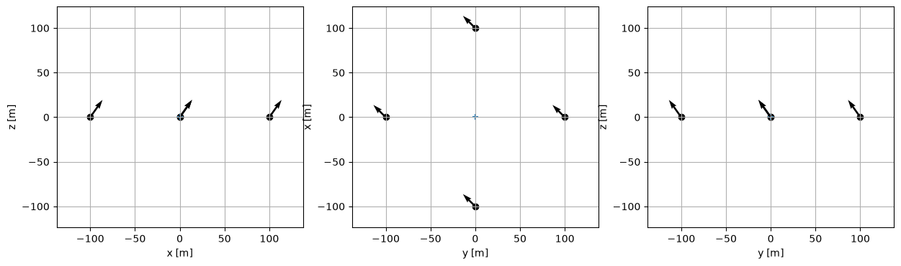

Interactive display of the divergent pointing
[1]:
import astropy.units as u
import numpy as np
import matplotlib.pyplot as plt
import sys
from divtel.telescope import Telescope, Array
from divtel import pointing
from ipywidgets import interactive, FloatSlider, interact, fixed
[2]:
def hess_1():
tel1 = Telescope(100*u.m, 0*u.m, 0*u.m, 20*u.m, 1*u.m)
tel2 = Telescope(0 * u.m, 100 * u.m, 0 * u.m, 20 * u.m, 1 * u.m)
tel3 = Telescope(-100 * u.m, 0 * u.m, 0 * u.m, 20 * u.m, 1 * u.m)
tel4 = Telescope(0 * u.m, -100 * u.m, 0 * u.m, 20 * u.m, 1 * u.m)
return Array([tel1, tel2, tel3, tel4])
def random_array(n=10):
tels = [Telescope(1000*np.random.rand()*u.m,
1000*np.random.rand() * u.m,
0 * u.m,
np.random.rand() * u.m,
np.random.rand() * u.m,
)
for i in range(n)
]
array = Array(tels)
for tel in array.telescopes:
tel.x -= array.barycenter[0]*u.m
tel.y -= array.barycenter[0]*u.m
tel.z -= array.barycenter[0]*u.m
return Array(tels)
[3]:
array = hess_1()
for tel in array.telescopes:
tel.point_to_altaz(90*u.deg, 0*u.deg)
[4]:
%matplotlib inline
@interact
def interactive_2d(div=(0, 1, 0.01), alt=(0,90), az=(0,90)):
array.divergent_pointing(div, alt*u.deg, az*u.deg)
fig, axes = plt.subplots(1, 3, figsize=(15,4))
ax = array.display_2d(projection='xz', ax=axes[0])
array.display_2d(projection='xy', ax=axes[1])
array.display_2d(projection='yz', ax=axes[2])
Ignoring fixed y limits to fulfill fixed data aspect with adjustable data limits.
Ignoring fixed y limits to fulfill fixed data aspect with adjustable data limits.
Ignoring fixed y limits to fulfill fixed data aspect with adjustable data limits.

[ ]:
[5]:
%matplotlib notebook
@interact(continuous_update=False)
def interactive_3d(div=(0, 1, 0.01), alt=(0,90), az=(0,90)):
array.divergent_pointing(div, alt*u.deg, az*u.deg)
ax = array.display_3d()
ax.scatter(array.barycenter[0], array.barycenter[1], array.barycenter[2])
[ ]:
[ ]: